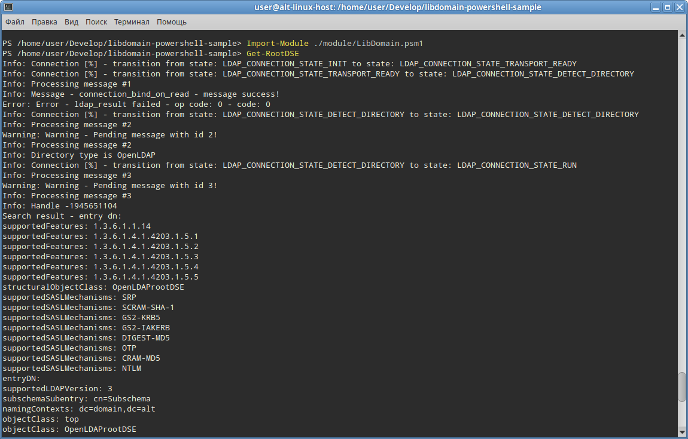

How to Build libdomain and PowerShell Modules
1. Installing PowerShell on Linux
To build libdomain and PowerShell modules on Linux, you first need to install PowerShell.
On Alt distribution run following command:
# apt-get install powershellYou can follow these steps (for other distributions):
1. Download the appropriate package for your Linux distribution. The official PowerShell GitHub releases page: PowerShell Releases
2. Follow the installation instructions provided for your specific distribution.
2. Installing .NET and SDKs on Linux
After installing PowerShell, you'll need to set up the .NET environment and the necessary SDKs.
On Alt distribution run following command:
# apt-get install dotnet-sdk-7.0You can follow these steps (for other distributions):
1. Download SDK .NET SDK for Linux. The official .NET download page: Download .NET
2. Install the .NET SDK for Linux. Make sure to follow any additional setup instructions provided for your distribution.
3. Building Native Module
To compile the program, you need to install the libdomain library.
# apt-get install git libdomain-devel libconfig-devel cmake rpm-build glib2-develClone the example:
$ git clone https://github.com/libdomain/libdomain-powershell-sample && cd libdomain-powershell-sampleTo build the native module for libdomain, follow these steps:
$ cd native && mkdir build && cd build && cmake .. && make -j `nproc`4. Building C# Module
Building a C# module for PowerShell involves using the .NET SDK. Here's a basic outline:
$ cd ../../src && dotnet build5. Combining Modules
Once you have built the native and C# modules, you may need to combine them.
To do so copy binary modules in bin folder:
$ cd .. && cp native/build/libdomain_wrapper.so ./bin/ && cp src/bin/Debug/net7.0/LibDomain.dll ./bin/
How to Use
For this example we assume user has OpenLDAP server running locally on localhost's port 3890 with simple authentication. For the sake of simplicity our example application has this values hardcoded in native/main.c you can change them according to your setup. Please refer to LDAP server manual of how to setup server if you plan to use example with different LDAP server.
Launching Scripts
To use the scripts and modules you've built, follow these general steps:
powershellImport-Module ./module/LibDomain.psm1 Get-RootDSE
The program consists of the following modules
1. LibDomain.dll. Wrapper to native library libdomain_wrapper.so provides ability to import functions from native libary. You can find sources for that module in src folder.
using System;
using System.Runtime.InteropServices;
namespace LibDomain
{
public class Native
{
[DllImport("libdomain_wrapper.so")]
public static extern int get_root_dse();
}
}
2. libdomain_wapper.so. Located in the native folder this module loads libdomain and provides get_root_dse function. This function then will be called from LibDomain.dll.
#include <libdomain/common.h>
#include <libdomain/domain.h>
#include <libdomain/directory.h>
#include <libdomain/entry.h>
#include <libdomain/connection_state_machine.h>
#include <stdio.h>
#include <stdbool.h>
#include <talloc.h>
static char* LDAP_DIRECTORY_ATTRS[] = { "*", "+", NULL };
static void exit_callback(verto_ctx *ctx, verto_ev *ev)
{
(void) ctx;
(void) ev;
verto_break(ctx);
}
static enum OperationReturnCode connection_on_error(int rc, void* unused_a, void* connection)
{
(void)(unused_a);
verto_break(((ldap_connection_ctx_t*)connection)->base);
fprintf(stderr, "Unable to perform operation!\n");
exit(EXIT_FAILURE);
return RETURN_CODE_SUCCESS;
}
static void connection_on_update(verto_ctx *ctx, verto_ev *ev)
{
(void)(ctx);
struct ldap_connection_ctx_t* connection = verto_get_private(ev);
if (connection->state_machine->state == LDAP_CONNECTION_STATE_RUN)
{
verto_del(ev);
search(connection, "", LDAP_SCOPE_BASE,
"(objectClass=*)", LDAP_DIRECTORY_ATTRS, 0, NULL);
}
if (connection->state_machine->state == LDAP_CONNECTION_STATE_ERROR)
{
verto_break(ctx);
fprintf(stderr, "Error encountered during bind!\n");
}
}
int get_root_dse()
{
TALLOC_CTX* talloc_ctx = talloc_new(NULL);
char *ldap_server = "ldap://127.0.0.1:3890";
char *ldap_username = "admin";
char *ldap_password = "password";
char *ldap_bind_dn = "dc=domain,dc=alt";
const int update_interval = 1000;
ld_config_t *config = NULL;
config = ld_create_config(talloc_ctx, ldap_server, 0, LDAP_VERSION3, ldap_bind_dn,
ldap_username, ldap_password, true, false, false, true,
update_interval, "", "", "");
const int exit_time = 10000;
LDHandle *handle = NULL;
ld_init(&handle, config);
ld_install_default_handlers(handle);
ld_install_handler(handle, connection_on_update, update_interval);
ld_install_handler(handle, exit_callback, exit_time);
ld_install_error_handler(handle, connection_on_error);
ld_exec(handle);
ld_free(handle);
talloc_free(talloc_ctx);
return 0;
}
3. Power shell scripts. Placed in module directory this scripts import LibDomain.dll and call [LibDomain.Native]::get_root_dse() from it.
using namespace System.Management.Automation
$importModule = Get-Command -Name Import-Module -Module Microsoft.PowerShell.Core
&$importModule ([IO.Path]::Combine($PSScriptRoot, '..', 'bin', 'LibDomain.dll')) -ErrorAction Stop
Function Get-RootDSE {
<#
.SYNOPSIS
Gets the RootDSE from LDAP server.
#>
$rootDSE = [LibDomain.Native]::get_root_dse()
}